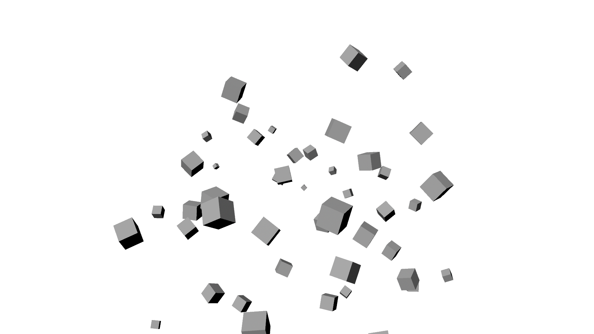

13. CHAPTER 1 Hello world¶
13.1. Форматирование текста¶
— Извините, я опоздал.
— Что случилось?
— Да ничего, я просто не хотел приходить.
Теория большого взрыва
- Шелдон Купер
- Пенни
- Леонард Хофстэдер
- и т.д.
- Сезон 1
- Сезон 2
Примечание
Ждите новые сезонны в сентябре.
13.2. Форматирование кода¶
Логотип python:
Куски исходного кода вставляются так:
for i in xrange(1,5):
print i
или так
>>> for i in xrange(1,5):
... print i
New try!
13.2.1. Заголовок 4 уровня¶
жирный текст
курсив текст
«как есть»
- Один
- Два
- Три
А что тебе не хватает? Непонятно.
надо больше текста. Надо больше текста.) надо ещё больше текста.))
а если я добавлю.
Странно что писать здесь работает?
def some_function():
interesting = False
print 'This line is highlighted.'
print 'This one is not...'
print '...but this one is.'
Подключенный файл:
# -*- coding: utf-8 -*-
"""
Created on 12.05.13
:author: ivanov
Описание моделей
"""
class Account(BaseEnterpriseDictionaryModel):
"""
Модель плана счетов.
"""
def create_doc(doc_model, operation, doc_params=None):
""" Создание документа на основе полученных данных
:param doc_model: класс модели документа
:param operation: шаблон операции
:type operation: web_bb.core.repos.models.DocumentOperations
:param dict doc_params: словарь параметров, которые будут присвоены
экземпляру документа
:return: экземпляр на основе переданной модели документа
:raise: KeyError
"""
Может теперь будет работать?
«И» - эту строчку стирать нельзя что бы кодировка не рушилась. Зато можно переместить в конец.) А что он проверяет.